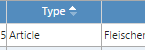

Filtering and Searching
To search for articles, use the filters at the top of ARTEMIS Dashboard.
Using Filters
You can perform basic searches use the Journal, Article ID, Title, Issue ID, Article Type, Active Workflow, Created Date, and Author filters. Select the drop-down list next to each or type in the text boxes.
- Journal is the journal ID; an acronym such as JLR, JI, JCB, etc.
- Article ID is a short identifier for the article, corresponding the ARTEMIS Record ID. You can search on partial IDs.
- Title is the full article title. You can search on partial titles.
- Issue ID is the ARTEMIS Issue ID for the article formed from the volume and issue number, for example, v023i119. If you select multiple Journal entries, the journal acronym appears in the Issue ID drop down, e.g., DJS - Editorial.
- Article Type is the customer/journal-specific article type. If you select multiple Journal entries, the journal acronym appears in the Article Type drop down, e.g., DJS-v99i121.
- Active Workflow values are All, Active, or Inactive. Inactive means the article has completed or has been stopped. This occurs when an article is withdrawn, for example.
- Created Date is the date of article creation. If you enter only a beginning date, ARTEMIS Dashboard displays only those articles created on that date. If you enter a date range, articles created within that range are shown.
- Author displays the authors' names. You can search on partial names.
You can sort on all columns except Issue ID, Workflow Task, Workflow Stage, and Action(s). Click inside the column header cell to sort.

ARTEMIS Dashboard displays results as soon as you choose a drop-down item or when you finish typing text and press Enter. Searches do not accept wildcard characters, but will match partial entries. That is, ARTEMIS Dashboard returns Goodman, Goodall, and Osgoode if you enter Good in the Author box. ARTEMIS Dashboard only displays articles that meet all filter criteria.
Adding to Filters
If you need a more complex filter, use the Add to filter command. This command does three things:
- Moves currently entered criteria to a summary line.
- Displays a new blank form you use to enter additional filter criteria.
- Aggregates the filter, acting as a logical 'OR' and combining the results of each filter.
Here we've created a filter to find articles with the Article ID of 051415 OR TLF2727.
ARTEMIS Dashboard immediately displays your results in the Article Dashboard. Please see the Article Dashboard topic for more information.
Clearing Filters
To quickly reset the filters to default values, click Clear filter.
filterandsearch.htm | Copyright © 2015 Dartmouth Journal Services All Rights Reserved.